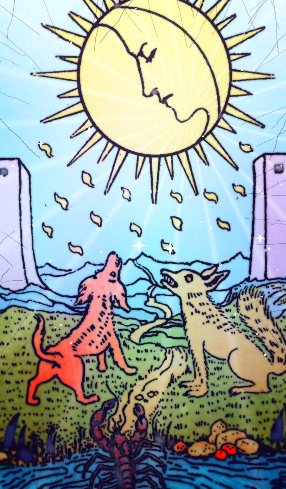

| Number | XVIII |
|---|---|
| Element / planet | Pisces |
The Moon tarot card meaning: love, career and advice
| Keywords · Upright | illusion, fear, the subconscious, uncertainty |
|---|---|
| Keywords · Reversed | clarity arriving, fears fading, confusion |
Upright
Not everything is what it seems. The Moon only half-lights the way: dreams, hunches, fears and hidden things. Move slowly.
Reversed
The fog is starting to lift. Your fears are losing their grip.
Love
Doubts, jealousy or something left unsaid. Lots of emotion, little clarity.
Career and money
Incomplete information. Don't sign blindly.
Advice
Don't decide until you see clearly.
Yes or no?
It's a “no” card, at least for now. Reversed, it opens the door to a “maybe”.
Past, present and future
In the past: Some illusion has already shaped your path. Look at what it taught you.
In the present: Right now it's about illusion and fear. That's the energy of the moment.
In the future: A time of uncertainty is coming. Get ready to welcome it.
Frequently asked questions
What does The Moon mean in tarot?
Not everything is what it seems. The Moon only half-lights the way: dreams, hunches, fears and hidden things. Move slowly. Don't decide until you see clearly.
Is The Moon a yes or no card?
It's a “no” card, at least for now. Reversed, it opens the door to a “maybe”.
What does The Moon reversed mean?
The fog is starting to lift. Your fears are losing their grip.